Concurrency in Python — the complete flow
A complete story-arc — from how a chip is physically made, through what a core and thread really are, to Python's asyncio, threading, the GIL, and multiprocessing. Every section is short enough to read in 2–5 minutes.
What's covered
- The opening experiment — a live Python demo raises the question
- How a chip is made — rock → wafer → transistor → design → EUV → TSMC → binning → package
- The mental model — 55-year timeline + why Apple is faster (SoC)
- What is a core, what is a thread — hardware vs OS
- Concurrency vs Parallelism — Rob Pike's distinction
async/await/asyncio— cooperative concurrency, one thread- The GIL — why threads don't parallelise Python bytecode
multiprocessing— the escape route to real parallel cores- Python 3.14t — the GIL is (optionally) gone
- The answer — the mystery solved on Activity Monitor
The opening experiment
≈ 2 minBefore anything else, an experiment. Run it on your machine and watch what happens.
- Open your CPU monitor:
- Mac — Activity Monitor → View → CPU Usage
- Windows — Task Manager (
Ctrl + Shift + Esc) → Performance → CPU (right-click the graph → "Change graph to → Logical processors" to see every core)
- In terminal, from
Part-54/, runpython cpu-demo.py 1. - The monitor shows one CPU core at ~100%. Every other core stays idle.
- Read the numbers: Python is at 100% CPU. Total system CPU is around
100 / N% (whereNis your core count — on this 14-core M4 Pro, that's about 7%). You paid for many cores. The program is using one.
As a developer, you pay for all this hardware. In production, you rent servers with 32, 64, 128 cores. But out of the box, your Python script uses one of them.
Three questions come straight out of this experiment. Every section below is here to answer them:
- Why only one core? Why does Python not spread the work across all the cores you have?
- What is a "core", and what is a "thread"? Why does one Python program pin exactly one of them?
- How do we unlock the rest? What are threads, processes, and
async— and when do you use each one?
To answer these, we have to go into the machine itself. It starts with how the chip is physically made — because every one of these answers becomes obvious once you've seen the hardware.
From rock to wafer — the raw material
≈ 2 minThe silicon inside your Mac, your Windows laptop, and even your phone did not come from beach sand — that's an oversimplification you'll hear everywhere. It came from a specific rock called quartzite, mined out of the ground and refined through four industrial stages until it is 99.9999999% pure. That's 9 nines: one non-silicon atom per billion silicon atoms. The purest material humans have ever made.
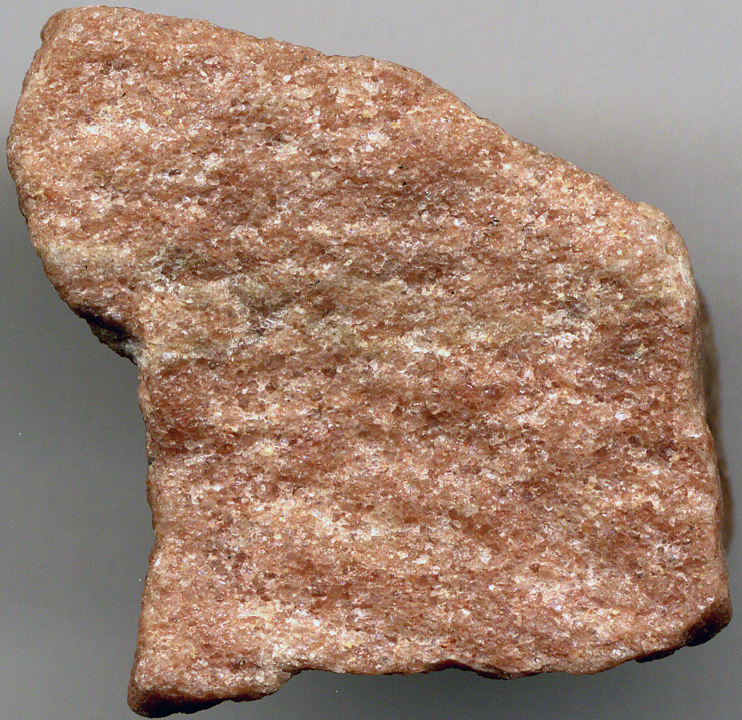
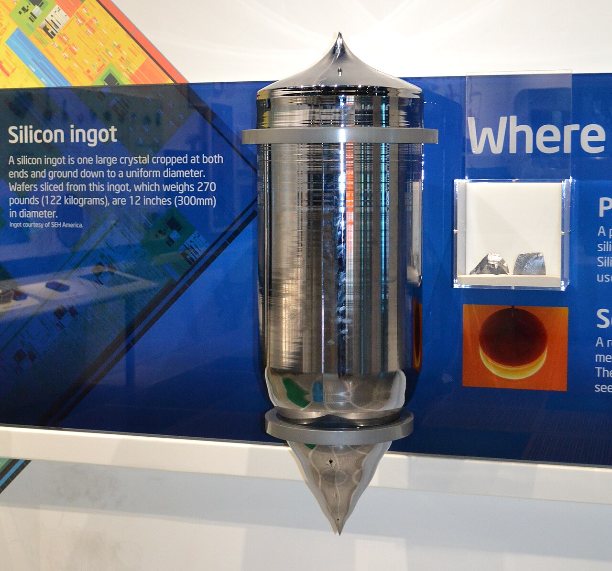
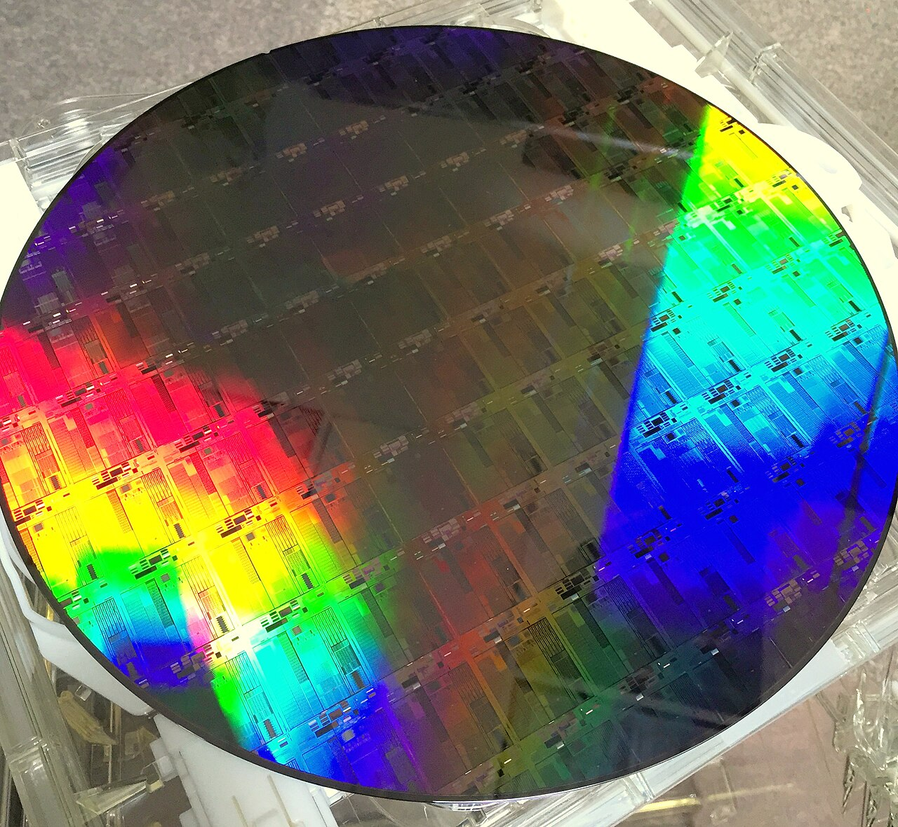
Rock → melted with carbon at 2,000 °C to get raw silicon → purified through chemistry into ultra-pure rods → melted again and pulled into a single crystal → sliced into wafers. That wafer is the blank sheet the whole chip is built on.
- Wikipedia — Quartzite, Metallurgical grade silicon, Siemens process, Czochralski method, Monocrystalline silicon, Silicon wafer
- Video — Real Engineering: "How are Silicon Wafers Made?" (15 min)
- Video — Branch Education: "How are Microchips Made?" (33 min — full lifecycle animation)
- Industry — Bernreuter Research (the polysilicon industry primer)
The transistor — a switch made of silicon
≈ 5 minWe now have a blank silicon wafer. To turn it into a computer, we need one thing on top of it: switches. Billions of them. Each switch is called a transistor. Your M4 Pro has 55 billion of them on a piece of silicon the size of a postage stamp.
Why switches? Because everything a computer does is 0s and 1s
Whatever you write in Python, C++, or any language — 2 + 2, opening a file, sending a WhatsApp message — the CPU only understands ON or OFF. Every calculation is billions of ON/OFF flips per second. So a computer, at the bottom, is just an enormous grid of tiny switches. The whole history of computing is one story: making those switches smaller, cheaper, and faster.
The 80-year story of the switch
Same idea across four generations. Just smaller and smaller — by a factor of about ten million:

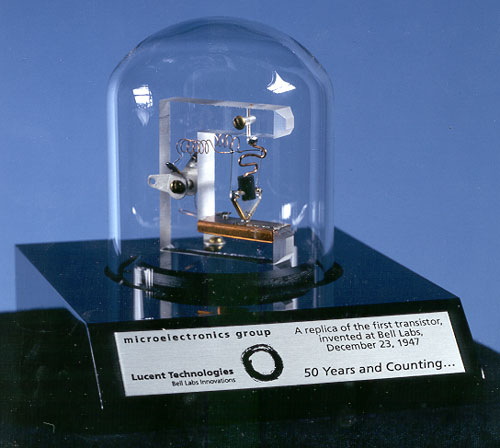
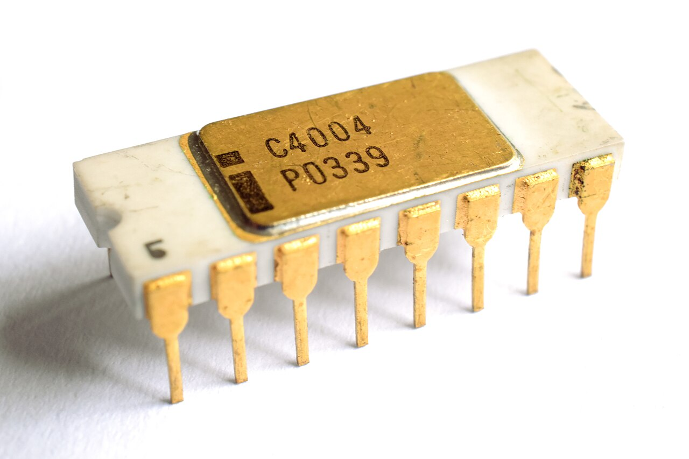
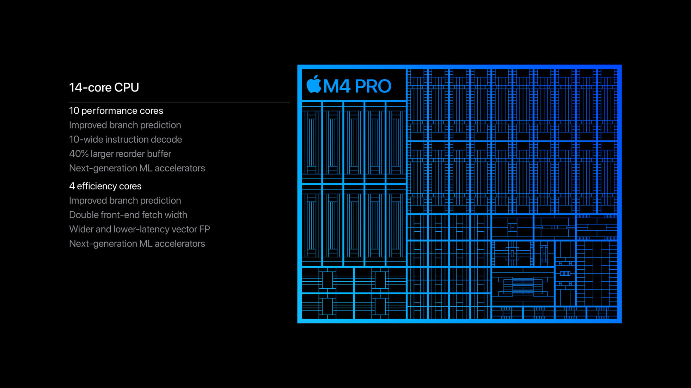
Same principle for 80 years. Just smaller. That is why your MacBook (or Windows laptop) fits on your lap and ENIAC filled a room.
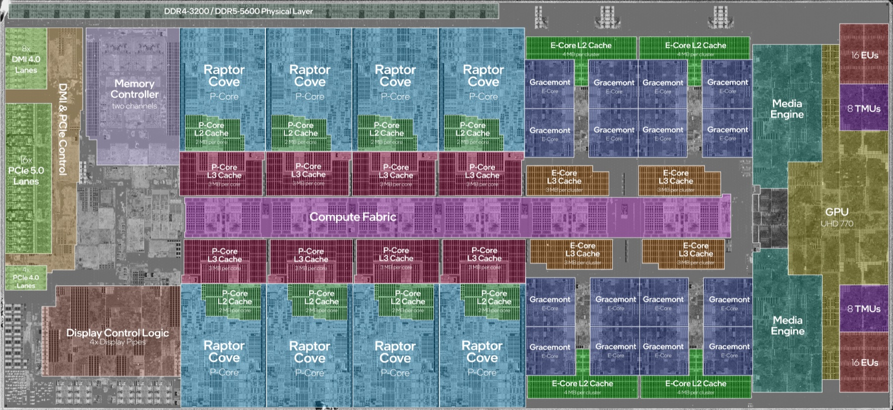
Intel Core Ultra 9~30 B transistors · 3 nm class
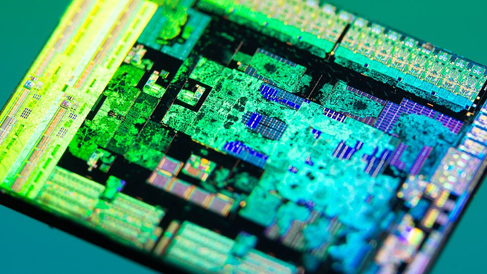
AMD Ryzen 9~20 B transistors · 4/5 nm class
Transistor = a tiny on/off switch made of silicon. Three terminals: Source · Gate · Drain. Voltage on the Gate lets current flow from Source to Drain. That's a 1. No voltage → no flow → that's a 0.
Microprocessor = many transistors (thousands → billions) packed onto one piece of silicon that together do the full job of a CPU — fetch an instruction, decode it, add/multiply/compare, and store the result. Intel 4004 (1971) was the first one that fit an entire CPU on one chip. Every phone, laptop, and server chip today is a much bigger microprocessor.
So — why silicon for the transistor?
Because pure silicon is a semiconductor: it neither conducts electricity like copper nor blocks it like glass. It sits exactly in the middle. That in-between property is what lets us control when it conducts and when it doesn't — which is exactly what a switch needs. Copper is too permissive (always ON). Glass is too restrictive (always OFF). Silicon is the sweet spot we can gate.
How a switch is built out of silicon
By doping — shooting a few atoms of phosphorus or boron into precise regions of the silicon using an ion implantation machine. Those doped regions behave differently from the pure silicon around them. Line up two doped regions with a plain silicon region between them, put an insulator layer on top, put a metal wire on top of that (the "gate") — and you have built one MOSFET switch. Voltage on the gate → electricity flows (1). No voltage → nothing flows (0).
A MOSFET — the switch inside every chip. Three terminals: Source, Gate, Drain. Put voltage on the Gate → current flows Source → Drain (that's a 1). Remove the voltage → nothing flows (that's a 0). That is the whole trick.
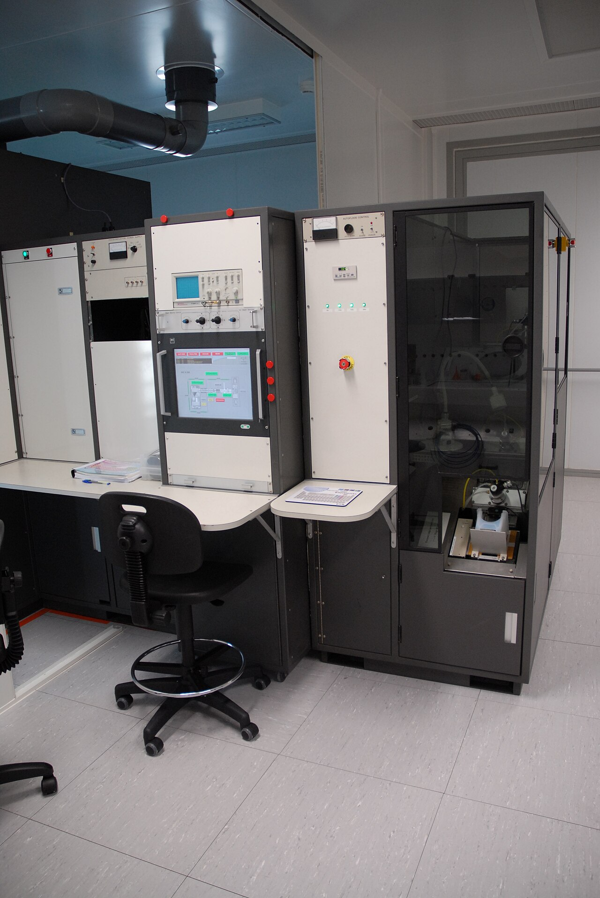
Multiple layers connect them — the "highways"
Once all the transistors are built on the wafer, they need to be wired together. Modern laptop chips stack 14–17 layers of copper wiring on top of the transistors. Apple M4 Pro (TSMC N3 process), Intel Core Ultra 9 (Intel 3 / TSMC N3), AMD Ryzen 9 (TSMC 4 nm) — all three of the laptop chip families shipping today use this same multi-layer architecture. Each layer routes signals to different parts of the chip. This is called BEOL (Back-End of Line). One chip goes through 1,000+ processing steps and takes 3–4 months to finish, wafer start to finished wafer.
But wait — where does each transistor go?
A small correction to a common intuition. It is tempting to picture the process as: "the ion implanter turns the whole wafer into a uniform sea of transistors first, and then somebody wires them up." That is not how it works.
The design comes first. The design acts like a stencil (called a photomask) — every doping step, every wiring layer, only happens in the exact regions the design specifies. All 55 billion transistors on your M4 Pro sit precisely where an engineer at Apple drew them, months earlier.
Which means: you cannot have a transistor without a design first. The chip is not made then designed — it is designed then made. And that raises the next question.
Section 3 answers → So who draws this design? And what "language" does the chip actually speak that lets a design get turned into silicon?- Wikipedia — MOSFET, Doping (semiconductor), Ion implantation, Photolithography, FinFET, Gate-all-around (GAA) FET
- Video — Branch Education: "How do Transistors Work?" (11 min — best animation on YouTube)
- Video — Applied Science: "Making integrated circuits at home" (technical, deep)
- TSMC — TSMC logic process roadmap (N7 → N5 → N3 → N2)
The language and the design — two separate things
≈ 6 minWe know a chip is designed then built. But "design" is a loose word. In reality, a chip company makes two very different decisions, and it's important not to confuse them (people usually do). Both are needed to make a chip.
What "language" does the chip understand? — and how do you physically build a chip that speaks it? These are two different questions with two different answers.
| 🗣️ The LANGUAGE (ISA) | 🏗️ The DESIGN (microarchitecture) | |
|---|---|---|
| What is it? | The vocabulary the chip physically understands. The rules for what patterns of 0s and 1s mean — ADD, LOAD, STORE, JUMP. |
The physical layout of the transistors on the silicon — how many cores, where the cache goes, how the GPU is arranged, where the NPU sits. |
| How many exist? | Only 3 in the whole world: ARM, x86-64, RISC-V. Almost never change. | Dozens, and a new one launches every 1–2 years: M4 Pro, Core Ultra 9, Ryzen 9, Snapdragon X… |
| Who owns it? | ARM Holdings (ARM) · Intel & AMD (x86) · open-source community (RISC-V). | The chip designer: Apple, Qualcomm, Intel, AMD, Samsung, NVIDIA… |
| Simple analogy | The language a person speaks (English, Hindi, Kannada). | The specific person (John who speaks English is not the same as Priya who also speaks English). |
Two people can speak the same language but be completely different individuals. Same for chips: Apple M4 Pro and Qualcomm Snapdragon X both speak ARM — but they are two very different physical designs made by two very different companies.
Layer 1 — the LANGUAGE (ISA)
The chip's language is called an Instruction Set Architecture (ISA). Think of it as the rulebook that says: "if you see this pattern of 0s and 1s, do this operation." The chip's transistors are physically wired to recognise the patterns in its ISA — so an ARM chip literally cannot understand an x86 pattern, and vice versa.
A typical ISA has around 100–2,000 machine instructions. Examples:
ADD R1, R2 # add two registers LOAD R1, [address] # fetch data from memory STORE R1, [address] # save data to memory JUMP address # go to another instruction
No, not quite. Python is a high-level language you write. ISA is a low-level machine language the chip physically executes. Your Python code has to be translated down into ISA before the silicon can run it. Roughly:
# Python you write: result = 2 + 3 │ Python interpreter (or a C++ compiler) │ translates it into ISA instructions ▼ # Machine code (ARM ISA) the chip actually executes: LOAD R1, 2 LOAD R2, 3 ADD R3, R1, R2 STORE R3, [result]
Each of those ISA lines is one thing the chip's transistors are physically wired to do in a single clock tick. Python is many layers above this — but every Python line, no matter how fancy, eventually becomes a sequence of ISA instructions on the metal.
Three ISAs run the entire computing world:
| ISA | Who owns it | Who uses it |
|---|---|---|
| ARM | ARM Holdings (UK, Cambridge) | Apple M-series, Qualcomm Snapdragon, iPhone, Android — everything except Intel/AMD |
| x86-64 | Intel & AMD (jointly own it) | All Intel and AMD desktop/laptop/server chips |
| RISC-V | Open source | Growing fast — SiFive, Alibaba, some AI accelerators, some Nvidia GPU cores |
ISAs are like human languages. ARM = English · x86 = Kannada · RISC-V = Hindi. A chip only understands one natively — there is no in-between. That's why a Windows .exe compiled for x86 won't run on an ARM Mac without a translator (Rosetta 2 does this on Apple Silicon).
Layer 2 — the DESIGN (microarchitecture)
Once a company picks a language (say, ARM), they still have to physically design a chip that speaks it. That's the microarchitecture — the actual arrangement of silicon:
- How many CPU cores? Any split between performance (P) and efficiency (E) cores?
- How big are the L1 / L2 / L3 caches?
- Where does the GPU sit relative to the CPU?
- Where does the NPU (Neural Engine / AI accelerator) go?
- How is the memory controller wired?
- What clock speed can each core hit before it overheats?
Same ISA, very different designs. Take three ARM chips:
| Chip | ISA (language) | Design (microarchitecture) | Made for |
|---|---|---|---|
| Apple M4 Pro | ARM | 14 cores (10P + 4E) + 20-core GPU + Neural Engine | MacBook Pro laptops |
| Qualcomm Snapdragon X Elite | ARM | 12 cores + Adreno GPU + Hexagon NPU | Windows-on-ARM laptops |
| Apple A17 Pro | ARM | 6 cores + smaller GPU, phone-tuned power/thermal budget | iPhone 15 Pro |
All three speak the exact same language (ARM). But the physical designs are completely different, because they target completely different products (laptop vs Windows laptop vs phone).
Language = ARM / x86 / RISC-V. Fixed rulebook, only 3 in the world, changes almost never.
Design = M4 Pro / Core Ultra 9 / Ryzen 9 / Snapdragon X. Physical layout, dozens of them, new one every year.
A chip is defined by both — but they are chosen separately.
The practical proof — this is why Python has 3 different Windows installers
All this ISA vs Design talk feels abstract. Here is the exact moment you will hit it as a developer. Open python.org/downloads/windows and you will see three different installers for the same Python version:
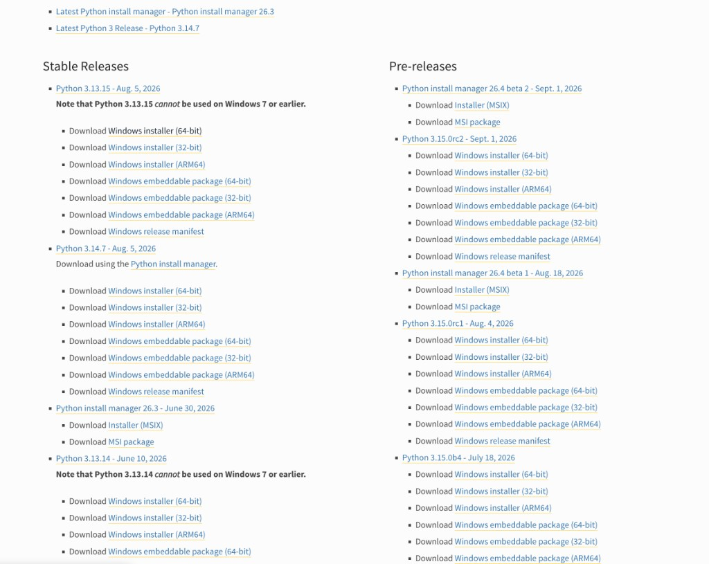
| What python.org calls it | Actual ISA | Which chip you have | Real examples |
|---|---|---|---|
| Windows installer (64-bit) | x86-64 (a.k.a. x64, AMD64) | Intel or AMD chip (≈99% of Windows laptops) | Intel Core Ultra 9, AMD Ryzen 9, older Core i7 / i9 |
| Windows installer (32-bit) | x86 (32-bit) | Very old Intel/AMD (pre-2010) | Ignore — legacy only, unless you have a museum-piece laptop |
| Windows installer (ARM64) | ARM | Windows-on-ARM laptop | Qualcomm Snapdragon X Elite, Surface Pro 11, Surface Laptop 7, most 2024+ "Copilot+ PCs" |
The one without an ISA label (just "64-bit") is actually x86-64. Python.org didn't spell it out because for 20 years x86-64 was the only Windows chip. ARM64 for Windows exploded only in 2024 with Snapdragon X, so it gets its own explicit label.
A Python installer built for one ISA does not run on the other. If you download the x86-64 installer on a Snapdragon X laptop, Windows will silently run it under an emulator called Windows Prism — the same idea as Rosetta 2 on Apple Silicon Macs. It works, but it's slower and burns extra battery. In production, on long-running scripts or ML workloads, it is measurable.
The fix is simple: pick the installer that matches your chip's ISA. Native speed, no translation layer.
How to check what chip you actually have
| OS | Where to look | What it means |
|---|---|---|
| Windows | Settings → System → About → System type | "x64-based processor" = x86-64 (Intel/AMD) "ARM-based processor" = ARM64 (Snapdragon) |
| Mac | menu → About This Mac → Chip | "Apple M..." = ARM (Apple Silicon) "Intel Core..." = x86-64 (Intel Mac, pre-2020) |
On Mac, python.org ships one macOS installer — a universal binary that contains both the x86-64 and ARM64 versions of Python inside a single file. macOS picks the right one at launch. That's why Mac users almost never bump into this problem, and Windows users always do.
python3 -c "import platform; print('Machine:', platform.machine())" # macOS Apple Silicon → Machine: arm64 # Windows Intel/AMD → Machine: AMD64 # Windows Snapdragon → Machine: ARM64
That single word (arm64, AMD64, x86_64) is proof of which ISA your chip speaks — decided at the factory years before you bought the laptop.
The three laptop chip families you'll see in 2026
Ignore mobile phones, iPads, servers for now — this is about laptops. Buy any laptop today and the chip inside is from one of three families. This is the whole mental map:
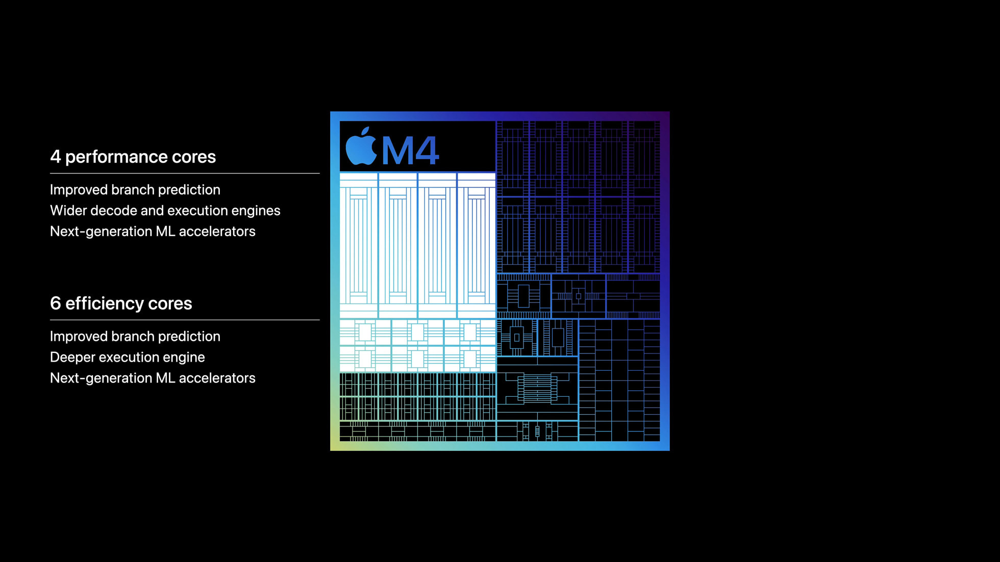
ARM64 build.
- Wikipedia — Instruction set architecture, ARM architecture, x86-64, RISC-V, ARM Holdings
- Apple — About Rosetta 2 (Apple's x86-on-ARM emulator)
- Video — Asianometry: "The Simplified History of RISC-V"
- Python — python.org/downloads (see how many installer variants there are per OS)
The pen — EUV lithography
≈ 3 minApple has done the design. TSMC has the wafer. How does the design get from a computer file onto the silicon? Through lithography. Light shines through a stencil (called a "mask"), and where it hits, the transistor patterns get etched.
Think of it like drawing. The wafer is your paper. The mask is the stencil. The light is the pen. But the pen has to draw features that are only 3 nanometres wide — thinner than a strand of your DNA (about 2.5 nm) and 2,300 times thinner than a human blood cell.
The pen is EUV light — 13.5 nm wavelength
Regular UV light isn't sharp enough. Modern chips use EUV (Extreme Ultraviolet) light at just 13.5 nanometres wavelength — so thin it can only travel in vacuum and gets absorbed by almost anything, even air. To generate it, a 50 kW laser hits a droplet of molten tin 50,000 times per second, creating a superheated plasma that emits the EUV. Then that light is bounced off mirrors polished to less than one atom of imperfection.
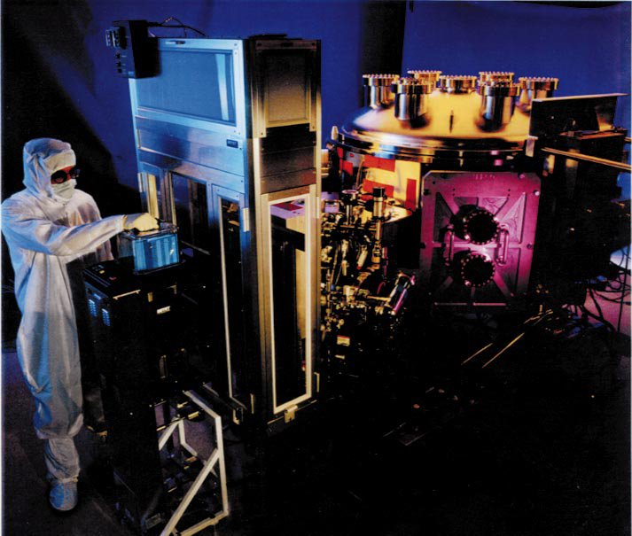
Only ONE company makes this machine — ASML (Netherlands)
ASML, based in Veldhoven, Netherlands, is the only company on Earth that makes EUV lithography machines. Every advanced chip on the planet — Apple's M4 Pro in your MacBook, NVIDIA's H100 in every AI data centre, AMD's Ryzen, Qualcomm's Snapdragon — was printed by an ASML machine. Only ~50 machines are made per year worldwide.
ASML doesn't build these machines alone — they integrate parts from thousands of suppliers. Zeiss (Germany) makes the mirrors. TRUMPF (Germany) makes the CO₂ laser. It is arguably the most sophisticated machine humans have ever built.
- Wikipedia — Extreme ultraviolet lithography, ASML Holding, 5 nm process, 2 nm process
- Video — Veritasium: "The Insane Engineering of ASML's EUV Machine" (30 min — the definitive explainer)
- Video — Asianometry: "The Making of ASML's Tin-Plasma EUV Light Source"
- ASML official — asml.com — EUV lithography explained
The factory — TSMC uses the machines
≈ 3 minThe single most common confusion in this area: ASML makes the machines. TSMC operates the factory. They are two completely different businesses.
ASML is the company that builds the printing press. TSMC is the newspaper that prints the news. Both are highly advanced. Both irreplaceable. But nobody expects Heidelberger — the world's biggest printing-press maker — to also run a newspaper. Same idea. Making the machine and running the factory are different jobs.
What TSMC does
TSMC (Taiwan Semiconductor Manufacturing Company) buys ASML machines and combines them with hundreds of other tools to run a fab (fabrication plant). They take the design file from Apple, load it into the ASML machines, and turn out chips. One chip takes 3–4 months to process, going through 1,000+ steps and 100+ passes of EUV lithography. TSMC makes chips for Apple, AMD, NVIDIA, Qualcomm, MediaTek — pretty much everyone except Intel (who has their own fabs).
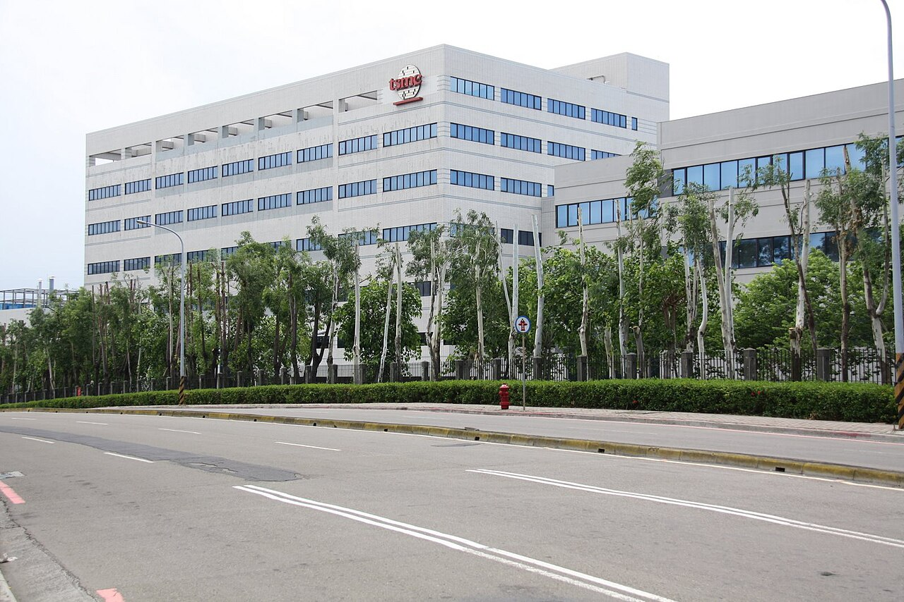
TSMC is in Taiwan. It produces roughly 90% of the world's advanced chips. That is why every China-Taiwan headline is secretly a chip story. If TSMC stopped tomorrow, the entire tech industry would freeze within 6 months. It's also why the US passed the CHIPS Act ($52 billion for domestic chip manufacturing) and why TSMC is building fabs in Arizona and Japan.
Intel is the exception. They both design AND manufacture chips — the only major player that still does both. They still buy machines from ASML, but they run their own fabs. That's why you'll hear "Intel Foundry" as a separate business unit now.
Section 6 answers → TSMC prints millions of chips from the same wafer. But why does one become an "i9" while another becomes an "i5"? A quality-control secret hiding in plain sight.- Wikipedia — TSMC, Semiconductor fabrication plant, CHIPS and Science Act (US), Foundry model, Intel Foundry
- TSMC official — tsmc.com
- Video — Asianometry: "TSMC's American Adventure" (Arizona fab)
- Book — Chris Miller — "Chip War" (2022 — the definitive book on the chip industry)
Chip binning — the i9 / i7 / i5 mystery revealed
≈ 4 minA fact almost nobody mentions. Intel does not manufacture the i9, i7, i5, and i3 as separate chips. They all come from the same silicon die. The difference is defects.
How chip binning works
When TSMC or Intel processes a wafer, not every chip on it is perfect. Tiny dust particles, laser misalignments, or chemistry variations cause microscopic flaws. When each chip is tested, the outcome is graded:
- All 8 cores work perfectly, high clock speed → Sold as the top model (was Core i9, now Core Ultra 9 / X9)
- 2 cores are defective → Those cores are permanently disabled by laser-fusing eFuses. Repackaged and sold as an i7 / Core Ultra 7.
- 4 cores dead or clock speed lower → Sold as an i5 / Core Ultra 5.
- Even more dead → Sold as an i3 / Core 3 or older Pentium/Celeron parts.
Old branding (2008–2023): Core i3 · i5 · i7 · i9, with model numbers like i5-2500K (2011, 2nd gen Sandy Bridge) or i9-13900K (2022, 13th gen). The number after the dash told you the generation.
New branding (2023–now): Core Ultra 5 · 7 · 9 (premium), Core 3 · 5 · 7 (mainstream, dropped the "i"). Latest generation is Core Ultra Series 3 (Panther Lake, CES 2026) — the first chips built on Intel 18A. A new X9 / X7 tier was added for the strongest integrated Arc graphics.
Same binning logic. Same story. Just a different sticker on the box. The "9" is still the top bin. The "5" is still cut-down silicon.
All 8 cores work
2 cores defective
4 cores defective
A real Intel Core i9-13900K die shot from a scanning electron microscope — the actual silicon, with individual cores visible. When a die like this fails testing on some cores, those get disabled and it ships as an i7 or i5:
Your CPU is literally partially broken. It's not a design difference — it's a quality-control outcome. When you buy a Core Ultra 5 (or an old i5), you're getting a Core Ultra 9 die with defects laser-fused off. This is why chip manufacturing is called "the most controlled process on Earth" — even with all that control, defects still happen, and binning turns those defects into a business model.
It's not always defect-driven. When demand for i5s exceeds the supply of naturally defective i9s, Intel takes perfectly working i9 dies and disables cores on purpose to fill the lower-tier orders. That's called artificial binning. AMD does the same with Ryzen. Even Apple binned the M3 Ultra (Mac Studio) using the same trick.
The packaged chip — traditional Intel vs modern Apple
≈ 3 minAfter the die is done, it gets glued to a small green board, capped with a metal heat spreader, and shipped. Put two chips side by side and the biggest difference in modern computing becomes visible:
Intel's chip is a CPU. Apple's chip is a SoC — a whole computer on one piece of silicon. This is why an M4 Pro MacBook feels so much snappier than a similarly-specced Intel laptop, even at lower clock speeds. Everything is right there on the same die — no PCIe wires to cross.
The 55-year timeline — one picture, no fluff
≈ 2 minThe whole reason concurrency exists as a problem today can be told on one timeline. Here's the compressed version:
Clock speed hit a wall in 2005. We haven't gotten meaningfully faster clocks in 20 years. All the speedup since then has come from more cores. And that is exactly why concurrency in Python matters — because Python by default uses one of them.
Why Apple is faster — the SoC
≈ 3 minThe M1 in 2020 was not just faster than an equivalent Intel chip. It felt like a different kind of machine. Here's why, in one table:
| Traditional Intel PC | Apple M-series SoC | |
|---|---|---|
| CPU | On the CPU chip | On the SoC |
| GPU | Separate NVIDIA/AMD card, PCIe wires | On the SoC — same silicon |
| RAM | Separate DIMMs on motherboard | Unified memory next to the die — CPU and GPU share it |
| Neural Engine | Not present (or on a separate accelerator card) | On the SoC — 16 cores, 38 TOPS |
| Distance between CPU and RAM | Several centimetres of PCB trace | A few millimetres — no PCIe hop |
| Memory copy for GPU work | Yes — CPU → PCIe → GPU memory | No — same memory pool |
Electricity travels at about 30 cm per nanosecond. On an Intel laptop, the CPU asks the GPU for something and has to wait for that signal to travel across the board and back. On the M-series SoC, everything is millimetres apart on the same silicon — the wait all but disappears. Combined with dedicated Neural Engine hardware and unified memory, the M-series doesn't just run faster; it wastes less energy doing it. That's why fans stay off, batteries last all day, and Final Cut renders 4K video on a laptop.
Intel is now copying this approach
Intel's "Core Ultra" chips (2024+) use a similar tile-based architecture — small chip modules for CPU, GPU, NPU stitched together. Called Meteor Lake / Lunar Lake / Arrow Lake / Panther Lake. Their newest process is Intel 18A — often called "1.8 nm".
“Intel 18A” reads as “1.8 Ångstroms”. “TSMC N2” reads as “2 nanometres”. Neither number is the actual size of a transistor. The real contacted poly pitch on Intel 18A is 50 nm; on TSMC N2 it's 48 nm. Actual gate lengths are still around 20 nm. The “2 nm” label is a marketing generation-name, not a physical measurement. Since about the 10 nm node, every “nm” number has been marketing.
- Wikipedia — Apple silicon, System on a chip, Meteor Lake (Intel Core Ultra Series 1), Panther Lake (Series 3, 2026), AMD Zen 5
- Video — Marques Brownlee: "Apple's M4 Explained"
- Intel official — Intel Core Ultra product page
- AnandTech — The Apple M1 review (2020 — the definitive technical breakdown)
What is a core?
≈ 2 minWith the chip traced from rock to package, “core” stops being a vague word.
A core is one physical worker inside the CPU section of the chip. It's a block of silicon carved out during lithography that can execute one instruction at a time. On this M4 Pro, there are 14 cores: 10 Performance cores for heavy work, 4 Efficiency cores for background tasks. On the die shot in the previous section, those are the 14 rectangular blocks. All 14 can run at the same instant, doing 14 completely independent things.
# Mac (Apple Silicon): sysctl -n hw.ncpu hw.physicalcpu hw.perflevel0.physicalcpu hw.perflevel1.physicalcpu # → 14 (total) # → 14 (14 physical cores) # → 10 (10 Performance cores) # → 4 (4 Efficiency cores) # Windows (PowerShell): Get-CimInstance Win32_Processor | Select-Object NumberOfCores, NumberOfLogicalProcessors # NumberOfCores : 8 # NumberOfLogicalProcessors : 16 (SMT/Hyper-Threading enabled → 2 threads per core) # Python (works everywhere): python3 -c "import os; print(os.cpu_count())" # → 14 on this Mac, 16 on an SMT Intel/AMD laptop, etc.
What is a thread? (there are two kinds)
≈ 3 minThe word "thread" trips up almost everyone because it's used at two different layers.
| Layer | What it is | How many on this Mac |
|---|---|---|
| Hardware thread (a.k.a. logical processor) | An execution slot on a physical core. On Intel/AMD, each P-core has 2 slots (Hyper-Threading / SMT). On Apple, each core has 1 slot. | 14 (Apple = 1 slot per core) |
| OS thread (a.k.a. software thread) | A unit of work the operating system can schedule. Managed by macOS/Windows/Linux. | Thousands — the OS time-slices them onto the 14 hardware slots |
Apple vs Intel/AMD — a real difference
- Apple M-series — no Hyper-Threading. 14 cores = 14 hardware threads.
- Intel — P-cores use Hyper-Threading. A 10-P-core + 6-E-core chip shows as 26 hardware threads (10×2 + 6×1).
- AMD Ryzen — SMT on all cores. 16-core Ryzen shows as 32 threads.
A core is a worker's desk. A hardware thread is a chair at that desk. Apple gives each desk one chair. Intel puts two chairs at each P-core desk — so when one worker is on lunch break waiting for memory to arrive, another worker can sit down and keep the desk busy. Apple's approach: fewer chairs, but each chair is faster.
A Python thread (from the threading module) is a real OS thread. So you can create thousands of them. But whether they can actually run in parallel depends on the GIL — Section 15.
threading — the Activity Monitor demo
≈ 4 minReal threading code, with Activity Monitor watching. This is where the mystery from Section 0 starts to make sense.
# Spawn 14 Python threads, each doing pure CPU work python cpu-demo.py 2 14
Activity Monitor now shows three surprises:
- Python's CPU is at ~100%, not 1,400%.
- Total system CPU is still around 7–10%.
- Only one CPU core is at 100%. Sometimes it hops between cores.
That command spawns 14 Python threads. Each is a real OS thread. The Mac has 14 physical cores. Expectation: 14 cores at ~100% each. Reality: one core. The reason — Python has a lock called the GIL that lets only one Python thread execute bytecode at a time. All 14 threads exist; they just take turns on one core.
So more OS threads did not unlock more cores. This is the surprise that makes people say “Python is slow.” It's not slow — it's using ONE core. The fix depends on why your program is waiting. That's the difference between concurrency and parallelism.
Section 13 answers → Fourteen threads. One core. Something is blocking Python from spreading work across cores. Before we hunt for the villain, one crucial distinction: doing many things "at once" (concurrency) vs. doing many things "at the same instant" (parallelism) — they are NOT the same word.Concurrency vs Parallelism
≈ 3 minThese two words get used interchangeably. They shouldn't. Rob Pike (co-creator of Go) gave the cleanest definition:
Concurrency is about dealing with many things at once. It's the structure — how you organise code so multiple tasks can be in flight.
Parallelism is about doing many things at once. It's the execution — actually running multiple tasks in the same instant on multiple cores.
Concurrency is possible on a single core (tasks take turns). Parallelism requires multiple cores.
Concurrency as an idea is old. UNIX had processes in 1970. IBM mainframes did time-sharing (many users on one CPU) in the 1960s. Erlang was built for telephone switching in the 1980s. On a single core, an OS could always interleave many tasks — that's concurrency.
What changed in 2005 is that every laptop suddenly had multiple cores, so parallelism — actual simultaneous execution on separate cores — became something every developer had to think about, not just OS kernel writers. Rob Pike's talk (below) crystallised the distinction for a generation.
Which Python tool gives which?
| Tool | Concurrent? | Parallel on many cores? | Best for |
|---|---|---|---|
asyncio | Yes — one thread interleaves tasks | No | Many I/O waits (APIs, DB, files) |
threading | Yes | Not for Python bytecode (GIL). Yes for I/O and C extensions. | Blocking I/O libraries (requests, DB drivers) |
multiprocessing | Yes | Yes — separate processes, one GIL each | CPU-heavy computation |
asyncio, how does it actually work, and why does one thread feel like ten?
- Video — Rob Pike: "Concurrency Is Not Parallelism" (30 min, the gopher/wheelbarrow analogy)
async / await / asyncio
≈ 5 minSection 13 introduced three tools. asyncio is the elegant one for waiting. Everything about it comes down to one concept — the coroutine — and one mental model — cooperative multitasking. Start with the concept.
What is a coroutine? — the concept behind all of this
A regular function runs to completion the moment it's called. A coroutine can stop mid-execution, hand control back, and resume later exactly where it stopped. That is the whole idea. Everything else in asyncio — the keywords, the event loop, the library — exists to create, schedule, and coordinate coroutines.
# Regular function — runs immediately, returns a value def greet(): return "Hello!" print(greet()) # → Hello! # Coroutine function — returns a coroutine OBJECT, doesn't run yet async def greet_async(): return "Hello!" print(greet_async()) # → <coroutine object greet_async at 0x104f8b920> # Not "Hello!". A coroutine object. Nothing has run. # To actually run it, hand it to asyncio: import asyncio print(asyncio.run(greet_async())) # → Hello!
The five pieces — each does one very specific job
| Piece | What it is | Its one job |
|---|---|---|
async |
Python keyword | Written before def. Turns a function into a coroutine function (a pausable function). Nothing else. |
await |
Python keyword | Written inside a coroutine. Pauses the coroutine at that line and yields control to the event loop. |
| Coroutine | An object | The pausable function itself. Created automatically when an async def function is called. Does nothing on its own. |
| Event loop | A Python runtime object | The manager. Actually runs coroutines: picks one, runs it until await, pauses it, picks the next, and so on. |
asyncio |
Standard library | Ships with Python. Provides the event loop plus helpers (sleep, gather, TaskGroup) and — critically — asyncio.run() which starts the event loop. |
async/await do NOT create the event loop
Writing async def foo(): creates a coroutine function. Calling foo() creates a coroutine object. But neither of these runs anything. There is no event loop yet, no thread juggling, no schedule. Coroutines are just recipes on a shelf. The event loop is created by asyncio.run(main()) — that single line is the moment coroutines actually start executing. Without it, every coroutine is inert.
All three must be present for anything to actually execute:
| What you have | What happens |
|---|---|
Only async (async def foo():) | Creates a coroutine function. Calling foo() returns a coroutine object. Nothing runs. |
async + await inside the function | Same as above. await is just a pause marker inside a lifeless recipe. Nothing runs. |
async + await + asyncio.run(foo()) | The event loop starts. The coroutine executes. await points actually pause and yield. NOW it works. |
The recipe analogy: async def writes the recipe, await marks the wait steps inside it, calling foo() hands someone the recipe paper — and asyncio.run() is the chef who finally reads it and cooks. Perfect recipe, no chef → nothing gets cooked.
All five pieces in one annotated example — the numbers match the table above:
import asyncio # [5] asyncio — the library async def task(name): # [1] `async` — turns this into a coroutine function print(f"{name} start") await asyncio.sleep(1) # [2] `await` — pause HERE; let other coroutines run print(f"{name} done") async def main(): # Each task("A"), task("B"), task("C") call creates a coroutine OBJECT [3] await asyncio.gather(task("A"), task("B"), task("C")) asyncio.run(main()) # [4] THIS starts the event loop, runs main, then closes it # Output: # A start # B start # C start ← all three coroutines started before any finished # A done # B done # C done
One OS thread. One core. Many coroutines. Every coroutine — whether the code creates 3 or 30,000 of them — runs on the same single OS thread the Python script started with (the one Python calls MainThread). asyncio never spawns a new thread per coroutine, per await, or per request. The event loop is one Python while loop; each coroutine voluntarily hands control back at every await; the loop then picks the next ready coroutine. Nothing is ever interrupted — coroutines cooperate.
Contrast: threads are preemptive. Every threading.Thread(...) creates a real, separate OS thread, and the OS interrupts them whenever it wants. Coroutines: one thread total, they yield only at await.
One waiter, ten tables. He takes an order from table 1 (await — hand order to kitchen), and while the kitchen cooks he walks to table 2, takes their order, then table 3, and so on. One waiter, ten tables served concurrently. That's asyncio. Brilliant when most of the time is waiting. Useless for pure CPU work — no wait to overlap.
Three APIs cover almost every real use case
asyncio.run(coro)— the entry point. Creates the event loop, runs the coroutine, closes the loop.asyncio.sleep(n)— non-blocking sleep. Yields control fornseconds. Never usetime.sleep()inside a coroutine (it freezes everything).asyncio.gather(*coros)— run many coroutines concurrently, wait for all, return results in the same order.
One complete demo showing all three:
import asyncio, time
async def task(name, delay):
print(f"{name} starting")
await asyncio.sleep(delay) # pauses THIS coroutine; others keep running
print(f"{name} done after {delay}s")
async def main():
t0 = time.perf_counter()
await asyncio.gather( # run all 3 concurrently
task("A", 2),
task("B", 1),
task("C", 3),
)
print(f"Total: {time.perf_counter() - t0:.2f}s")
asyncio.run(main()) # entry point
# Output:
# A starting ← all three start together
# B starting
# C starting
# B done after 1s ← shortest finishes first
# A done after 2s
# C done after 3s
# Total: 3.00s ← 3 s total, not 6 s. All three waited concurrently.
asyncio.TaskGroup()
Same as gather, with automatic cancellation if any task fails. Recommended for new code:
async def main():
async with asyncio.TaskGroup() as tg:
tg.create_task(task("A", 2))
tg.create_task(task("B", 1))
tg.create_task(task("C", 3))
# On exit: all tasks done. If any raised, all others were cancelled.
asyncio.run(main())
The question every developer asks — "does async/await create threads?"
Not one thread per coroutine. Not one per await. Not one per request. Every coroutine — 3, 300, or 30,000 — runs on the same single OS thread the Python script started with (MainThread). The event loop is one Python while loop taking turns between coroutines at each await. asyncio is an alternative to threads, not a wrapper around them.
Concrete counts — no matter how the code scales:
| What the code does | OS threads created |
|---|---|
asyncio.run(main()) with 1 coroutine | 0 new — uses existing MainThread |
100 concurrent tasks via gather | 0 new — all 100 take turns on MainThread |
10,000 concurrent HTTP requests via TaskGroup | 0 new — all 10,000 take turns on MainThread |
Explicit await asyncio.to_thread(sync_fn) | Uses a thread from a small pool (default: min(32, cpu_count + 4)) |
Proof — three coroutines, three identical MainThread lines:
import asyncio, threading
async def show_thread(n):
print(f"Task {n} thread: {threading.current_thread().name}")
await asyncio.sleep(0.1)
async def main():
await asyncio.gather(show_thread(1), show_thread(2), show_thread(3))
asyncio.run(main())
# Task 1 thread: MainThread
# Task 2 thread: MainThread ← same OS thread
# Task 3 thread: MainThread ← always MainThread; asyncio creates zero new threads
The only time asyncio creates a thread is when the code explicitly asks — via await asyncio.to_thread(sync_fn), the escape hatch for running blocking sync code (like a legacy DB driver or a slow C library call) without freezing the loop. Pure coroutines never touch a new thread.
Two mistakes that catch everyone
await
Calling an async function without await hands back a coroutine object, not the result. Python warns if the coroutine is garbage-collected without ever running.
import asyncio
async def fetch():
return "data"
# ❌ WRONG — forgot await
result = fetch()
print(result)
# → <coroutine object fetch at 0x104f8b920>
# → RuntimeWarning: coroutine 'fetch' was never awaited
# ✅ CORRECT — hand the coroutine to asyncio.run()
# (or `await` it from inside another coroutine)
result = asyncio.run(fetch())
print(result)
# → data
time.sleep() or requests.get() inside a coroutine
Blocking calls freeze the entire event loop — every other coroutine has to wait. Inside a coroutine, use the asyncio-friendly version of everything: await asyncio.sleep(...), httpx.AsyncClient, an async DB driver. If a sync-only library is unavoidable, wrap it in await asyncio.to_thread(sync_fn, ...).
import asyncio, time
async def task(name):
print(f"{name} start")
time.sleep(2) # ❌ freezes the ENTIRE event loop
print(f"{name} done")
async def main():
t0 = time.perf_counter()
await asyncio.gather(task("A"), task("B"), task("C"))
print(f"Total: {time.perf_counter() - t0:.2f}s")
asyncio.run(main())
# Output — sequential, NOT concurrent:
# A start
# A done ← B and C had to wait for A's blocking sleep
# B start
# B done
# C start
# C done
# Total: 6.00s ← 6 s (2 × 3), not 2 s
# ✅ Fix — swap `time.sleep(2)` for `await asyncio.sleep(2)`:
async def task_ok(name):
print(f"{name} start")
await asyncio.sleep(2) # ✅ yields to event loop
print(f"{name} done")
# Output — concurrent, all three interleave:
# A start
# B start
# C start
# A done
# B done
# C done
# Total: 2.00s ← 2 s total — all three waited concurrently
Use asyncio when the bottleneck is waiting for other machines — network, database, files. Huge speedups there, zero benefit for pure computation. Number-crunching is multiprocessing's job (Section 16).
- Python docs — asyncio, Coroutines and Tasks, TaskGroup
- PEP — PEP 492 — Coroutines with async and await syntax
- Video — David Beazley — "Python Concurrency From the Ground Up" (PyCon 2015, still the definitive deep dive)
- Article — Real Python — Async IO in Python: A Complete Walkthrough
The GIL — why threading doesn't help CPU work
≈ 4 minThe villain from Section 12 finally has a name.
The GIL (Global Interpreter Lock) is a single lock in the Python interpreter that only lets one thread execute Python bytecode at a time, no matter how many cores or threads you have.
Why does it even exist?
Because CPython's memory management (reference counting) isn't thread-safe. Without the GIL, two threads updating the same reference count at the same moment would corrupt memory. The GIL prevents that by serialising all Python operations.
The consequence — visualised
| Workload | What the GIL does | Result |
|---|---|---|
| Pure Python CPU-bound (loop crunching numbers) | Only one thread holds the GIL. Others wait. | N threads ≈ same speed as 1 thread. Sometimes slower. |
| I/O-bound (network, disk) | Python releases the GIL during I/O waits. | Threads wait in parallel. Real speedup. |
C extensions (numpy, pandas, torch) | These libraries release the GIL during native computation. | Real parallelism inside the extension. This is why NumPy/PyTorch scale. |
The GIL is not always bad. If your program spends 90% of its time in NumPy or waiting on APIs, the GIL is released 90% of the time and threading works great. The GIL only hurts when you're doing pure Python computation in a loop. And for that, use multiprocessing.
multiprocessing does — and it's how you finally light up every core.
- Wikipedia — Global interpreter lock
- Video — David Beazley: "Inside the Python GIL" (PyCon 2010, still the definitive talk)
- Video — David Beazley: "Understanding the Python GIL" (PyCon 2011, follow-up)
- Real Python — "What Is the Python Global Interpreter Lock (GIL)?"
- Python docs — threading, multiprocessing, asyncio
multiprocessing — the escape route
≈ 3 minThe GIL exists per-process. So the workaround is: spawn more processes, each with its own GIL. Now Python can truly use every core.
python cpu-demo.py 3 14
Activity Monitor now shows all 14 cores at ~100%. Total system CPU jumps to ~90%. Every core paid for is finally in use.
from concurrent.futures import ProcessPoolExecutor
def heavy_compute(n):
total = 0
for i in range(n):
total += i * i
return total
if __name__ == "__main__": # required on macOS/Windows
with ProcessPoolExecutor() as pool: # defaults to os.cpu_count() workers
results = list(pool.map(heavy_compute, [10_000_000] * 14))
print(results)
Each process has its own Python interpreter, its own memory, its own GIL. They don't fight for the lock — they don't share it. Downside: processes are heavier to spawn than threads, and sharing data between them is more work (you use Queue, Pipe, or Manager).
Threads for waiting. Processes for computing. That's the whole story on one line.
Python 3.14 — the GIL is (optionally) gone
≈ 2 minBig news that only landed in October 2024 with Python 3.13 and became officially supported in 3.14: after 25 years, CPython finally has a GIL-optional build.
| Build | GIL | Command |
|---|---|---|
| Standard Python 3.14 | GIL still on (backward compatible) | python3.14 |
| Free-threaded Python 3.14 | GIL disabled | python3.14t (note the t) |
When you install Python 3.14 from python.org, you get the standard build with the GIL still on. The free-threaded build is a separate installer option — you have to explicitly pick it. And it's still labelled “experimental” — some C extensions don't yet work with it, so you can't just switch all your projects overnight.
Yes, Python 3.14 has a no-GIL build. It's opt-in via the python3.14t executable (PEP 703 / PEP 779). Standard installs still ship with the GIL for compatibility. Threads finally run in true parallel in the free-threaded build — but many C extensions haven't been recompiled for it yet.
cpu-demo.py you ran in Section 0, re-run with the right tool. Watch every core finally light up — and see the three opening questions get answered on one screen.
The answer — mystery solved on Activity Monitor
≈ 3 minAll three experiments, back-to-back, tell the whole story on one Activity Monitor screen:
python cpu-demo.py 1→ one core at 100%. Baseline.python cpu-demo.py 2 14→ still one core. Threads didn't help. Because of the GIL.python cpu-demo.py 3 14→ all 14 cores at 100%. Because separate processes = separate GILs.
That's the whole story. A chip is made from rock, refined through TSMC's factory. Each core is a physical worker. Python threads share one core because of a lock called the GIL. To use all your cores, you either offload the wait (asyncio, for I/O) or spawn separate processes (multiprocessing, for CPU work). You now understand your machine and your language. You're a one-percent developer.
The three questions from Section 0 — now answered
- Why only one core? Because of the GIL — a single lock inside CPython that lets only one Python thread execute bytecode at a time. Every Python thread you spawn ends up taking turns on one core (Section 15).
- What is a "core", what is a "thread"? A core is a physical worker etched into silicon (Section 10). A thread is used at two layers: hardware threads (execution slots on a core — 1 per core on Apple, 2 per P-core on Intel/AMD via SMT) and OS threads (units the operating system can schedule, thousands of them) (Section 11).
- How do we unlock the rest?
- If the code is waiting (network, DB, files) → use
asyncio(Section 14) orthreading. - If the code is computing in pure Python → use
multiprocessing(Section 16) — separate processes, separate GILs, real parallelism. - Or, from late 2024,
python3.14t— the free-threaded build with no GIL at all (Section 17).
- If the code is waiting (network, DB, files) → use
The single decision tree to remember
Is your program slow? ├── Waiting on network/disk/DB? → asyncio (or threading if the library is blocking) ├── Crunching numbers in Python? → multiprocessing (or Python 3.14t free-threaded) └── Crunching in NumPy/Torch/C? → threading works fine — the C code releases the GIL